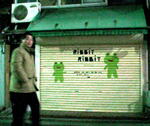
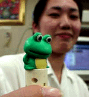

このバナーを自分のページに貼り付けたときから、全国かえる奉賛会の会員だよ |
|
【過去の新聞】
|
|
【カエル速報】 1.カエルグッズ 2.カエルリンク 3.国家健全化計画 4.謎の髭男 5.とっくりくん 6. 街頭で見た蛙 |
| 大王様へのメール |
奉賛会推薦図書
フロッグマン |
|
 |
|
 |
店に置いてある品々は、まさしくカエルグッズばかり。この店に埋もれて人生を送ることができるなんて、なんて幸せなことなんだろう。店のご主人に『わたしはカエルものに接すると、自我を失ってしまうほど感動するんです』と告白したら、ご主人は、カエルに打ち込む情熱を語ってくれたのでした。その内容は、かえる新聞編集長の取材におまかせしましょう。以下次回。
閉店は午後８時だった
会社が終わって、急いでかけつけたが、店には無情にもシャッターが降りていた。営業時間は、午前１０時カラ午後８時ゴロ、とかいてある。この『ゴロ』とあいまいにしているところは、ただものではないぞ。うれしくなっちゃうなー。閉店していたものの、シャッターには手書きのカエルの絵が書いてあって、なんだか心が満ち足りてしまう。この店舗の２階にでも、経営者は住んでいるのであろうか。思わずドアをノックしそうになったが、カエル店舗の経営者へのストーカーになって、商業新聞のネタになったらいやなので、ぐっと我慢して、次回の営業時間内訪問にかけるのであった。あした、会社を早退して行ってみようかな。午後５時ゴロなら、いいのではないか。カエルものって、経営はどうなんだろうねー。ぼろ儲けできるのかな。けろけろ。
| 写真の説明＝閉店していたが、シャッターもただものではないので、撮影しときました。下が、情報を寄せてくれたＮ同志です。『あたしよりも、この子を撮ってよ。ほら、こうすると、顔がくしゃっとなって可愛いでしょ！。ふだんは口がぱっくりしているんだけど、この方がきりっとしていいよね』。同店でさっそく仕入れた、かえるモノを熱く自慢する彼女であった。もちろん、ピントは、彼女よりもカエルモノに合わせましたっ！！ |